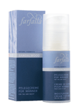
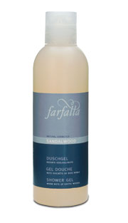
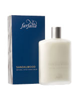
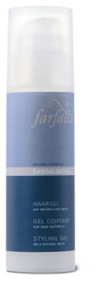

Sandalwood Nourishing Cream
Certified natural cosmetic (BDIH) with no synthetic dyes, artificial scents, preservatives or paraffines. Moisturising cream, especially designed for men’s skin. For day and night and after shaving. The wrinkle reduction reaches 33%. Effectiveness dermatologically tested. Distribute evenly on face.
 |
Sandalwood Shower Gel
Very mild shower gel for body and hair. With a tarty scent of sandalwood and cedar. For daily use.
 |
Sandalwood – Natural After Shave Balm
with a warm note of exotic woods. Discreet and yet very masculine, a perfume that brings to mind exotic woods. With precious sandalwood from the East Indies, nestling in a bed of cedar, iris and patchouli. Sandalwood balm soothes and cares for the skin after each shave. With aloe vera, witch hazel and camomile extracts as well as natural essential oils.
 |
Sandalwood Styling Gel
Sandalwood styling gel moisturises your hair with natural ingredients from aloe vera and witchhazel. For natural hair styling and modelling. Provides hair with a healthy shine and hold. Suitable for all types of hair.
 |